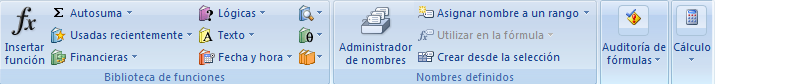

TEMARIO DE EXCEL
NIVEL BASICO
Introducción a Excel
Concepto de hoja de cálculo
Partes de la ventana de Excel
Crear, Guardar y Abrir un documento
Concepto de Filas, Columnas y Hojas de Cálculo
Definición de Celdas
Eliminar contenido de la celda
Introducción de Datos
Copiar, Cortar y Pegar Celdas
Formato de Celdas
- Fuentes
- Alineación
- Número
- Bordes
Operaciones básicas de celdas
- Ajustar ancho de las columnas y alto de las filas
- Insertar y eliminar filas y columnas
- Insertar y eliminar celdas
- Seleccionar rangos no adyacentes
- Vista preliminar e impresión
- Configuración de la página
- Márgenes
- Encabezados y pies de página
- Modificar las configuraciones de menú
- Inmovilizar y movilizar paneles
Trabajar con hojas
- Cambiar de nombre
- Ocultar y mostrar hojas
- Copiar y mover hojas
Zoom
Agregar Notas
Formulas
- Crear fórmulas
- Barra de fórmulas
- Mostrar fórmulas en una hoja de trabajo
- Mover y copiar fórmulas
Funciones
- Funciones estadísticas
- Funciones matemáticas y trigonométricas
- Funciones de fecha y hora.
- Anidar funciones.
Formulas con referencia a otras hojas
Gráficos
- Introducción
- Crear gráficos
- Añadir una serie de dato
- Modificar características del gráfico
- Modificar el tamaño
- Modificar la posición
Ordenar datos
Filtros
- Aplicar filtros
- Filtros personalizados
NIVEL INTERMEDIO - AVANZADO
Filtros Avanzados
Mas Funciones
- Funciones financieras
- Funciones texto
- Funciones lógicas
Funciones de base de datos
Proteger una hoja
Hipervínculos
Formato condicional
Validación de datos
Buscar Objetivo
Tabla de datos
Escenarios
Solver
Tablas y gráficos Dinámicos
- Crear una tabla dinámica
- Filtrar una tabla dinámica
- Formato a la tabla dinámica
- Gráficos con tablas dinámicas
Obtener datos externos
Macros
- Creación de una macro
- Ejecutar una macro
Opciones de Excel